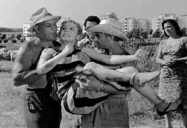

|
Nights of Cabiria(SE)/A,A |
|
Voyager/1957/118m/BW 1.33 |
The bravura
simplicity of Fellini’s vision perfectly mates with the unadorned tale of Cabiria, the feisty yet
innocent prostitute working the periphery of Rome’s dark streets. The fact that Cabiria retains
hope through all her travail is a marvelous reaffirmation of the wonder of life. Though Nights
of Cabiria could easily have turned maudlin, the great enduring strength of Cabiria and the
sense of humor of Fellini keep this narrow street movie on track. Fellini has great affection for
Cabiria and while he may question her lack of judgment, her goodness and spirit drive Nights of
Cabiria to a satisfying journey through the streets and barren outskirts of Rome.
 |
|
Cabiria displays her fight ©Voyager |
The film begins
and ends on similar notes. Has Cabiria changed during these nights we have spent on her journey
through life? Often, change must occur for a story to succeed, but Nights of Cabiria
is not about change. It is about endurance. Each incident depicted in Nights of Cabiria
offers its own joys. The character of Cabiria is the dominent element in every circumstance and
with every character. Cabiria endues.
Giuletta Masina brings Cabiria to brilliant screen life. Masina is a
precious actress without playing precious. A female Chaplin, her expressive face can play a scene
without support of words. Her unusual gait, her diminutive size, all contributes to the persona she
creates. You believe Masina is Cabiria; yet, this is a very sophisticated actress finding great
depth to her simple characters. One only has to compare Masina’s anguished prostitute Cabiria to
her Juliet in Fellini’s later masterpiece, Juliet of the Spirits, to understand the
complexity of the actress.
Federico Fellini knows how to energize simplicity or to simplify
complexity. Fellini has a unique feel for life of the streets, whether in Nights of
Cabiria, the glorious La Strada, or in the sophisticated La Dolce Vita. In Nights
of Cabiria, the scenes are set with beautiful black and white perfection. Nights dazzles,
barren landscapes open fully for examination. The actors come alive to Fellini’s natural
directing rhythms.
Discovering this beautiful DVD transfer of the restored Nights of Cabiria
is like discovering a gold ring inside a Cracker Jack box. Every precious expression of Giuletta
Masina is accurately captured on the DVD. The lustrous black and white of Fellini’s nights has
balanced contrast. Spotlights illuminate the characters in the dark shadows of the streets with
perfect control. There is minimum grain. The DVD provides the perfect platform to watch Nights
of Cabiria unfold brilliantly on your home theater.
This special edition includes some brief film comparisons between previous
existing prints of Cabiria and the current restored elements. These make it clear how of difficult
it would be to appreciate this film in its former state. An audio interview with Dino De Laurentiis
details the producer’s tug of war with Fellini over one segment of the film, “the man with a
sack,” that was restored for this presentation. An extensive talking head video interview with
former Fellini assistant Dominique Delouche is informative, though somewhat reverential. A short
excerpt from The White Sheik explains the origin of the character of Cabiria. There are also
an original and re-release trailer included. You can watch Nights of Cabiria in
Italian with English subtitles or in an English dubbed version.
|
|